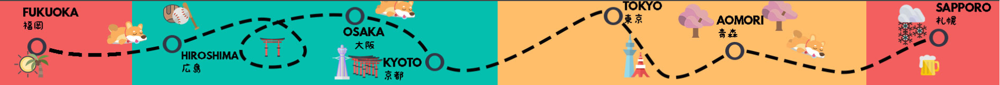

LAHNIKO
Land
Kultur
Sprache
Leute
Reise

Naoshima: Tadao Ando und die Insel Der Kunst
LANITA 04/05/2023
Nicht alle Tage trifft man bei einem Spaziergang entlang des Meeres auf überdimensionale Kürbis-Installationen in Gelb und Rot. Wenn dem so ist, bist du wahrscheinlich...
>> ARTIKEL LESEN
Himeji-jo: Japans besterhaltene Burg
LANITA 05/05/2023
Das Himeji-jo ist aufgrund seiner strahlend weißen Erscheinung weltberühmt und der bestbesuchten Sehenswürdigkeiten in ganz Japan. Doch auch fernab der glänzenden Fassade hat die Burg...
>> ARTIKEL LESEN
TeamLab Borderless | Digital Art Museum Tokyo
LANITA 05/05/2023
Ein fast schon magischer Mix aus Licht, Farben und Klängen erwartet Dich im Teamlab Borderless Digital Art Museum in Tokyo. Von digital erzeugten Wasserfällen an...
>> ARTIKEL LESEN